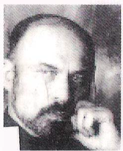

Daha önce yayımladığımız Nietzsche Ağladığında kısa sürede kendi hayranlarını yaratarak bir "kült" romana dönüştü. Bunun gibi yoğun metinlerde pek rastlanmayan bir ilgiyle karşılaşarak büyük övgüler aldı. Aynı yazarın hayranlarım hayal kırıklığına uğratmayacak bir başka romanını sunuyoruz bu kez: Divan. Yine yoğun, şaşırtıcı ve sürükleyici... ZAMAN Tam bir iletişim bombardımanına maruz kalırken en yakınımıza bile dokunmakta sorunlar yaşadığımız modern zamanlar. Bütün mahremiyet dengelerinin bozulduğu, "özel hayat" tecavüzcüleri ve teşhircilerle dolu bugünün dünyası. MEKÂN Psikiyatrist ve hastanın birbirlerine açıldıkları, birbirlerini teslim almaya çalıştıkları, yalan söyledikleri, seviştikleri bir tür mahremiyet koltuğu: Divan. Ya da "oyun yeri". AKTÖRLER Sahicilik ve samimiyet arayanlar. İçi acıyanlar. Dokunma ve konuşma yeteneğini yitirenler. Kendisiyle yüzleşmeyi beceremeyenler. Tanrı arayanlar. Yalnızlar. Dolandırıcılar. Ve zamanımızın vazgeçilmezleri arasındaki yerlerini giderek sağlamlaştıran psikiyatristler. KONU Yakınlarımızla yaşayamadığımız mahremiyeti bir kurum olarak paylaşan psikiyatristlerin ne ölçüde sahici ve samimi oldukları. Psikiyatrist ve hastası arasındaki mahremiyetin sınırları; seksin terapideki (varsa) yeri. Hayal ve hakikat ilişkisi. En mahrem sırlarımıza vakıf olan psikiyatristlerin bu "mahrem yükler"i taşırken kendi mahremiyetlerindeki dalgalanmalar karşısında nasıl tökezledikleri. Genç bir hekim,Amerikan Psikiyatri Birliği’nin başkanlığını yapmış, şimdi ise hastasıyla cinsel ilişkiye girmekle suçlanan bir meslektaşını sorgulamakla görevlendirilir. Suçlanan psikiyatrist, katı kurallara dayalı hasta-hekim ilişkisinin aşılmasını savunmaktadır: "Benim tekniğim, her türlü tekniği bir yana bırakmaktır" der. Genç hekimin tüm yaşamını değiştirecek olan bu görüşmeyle birlikte sevgi, hakikat, teori, otorite, benlik, doğruluk, para, statü, kibir, hınç... ve yalan üzerine, "içeriden anlatılan" bir yolculuk başlar.
